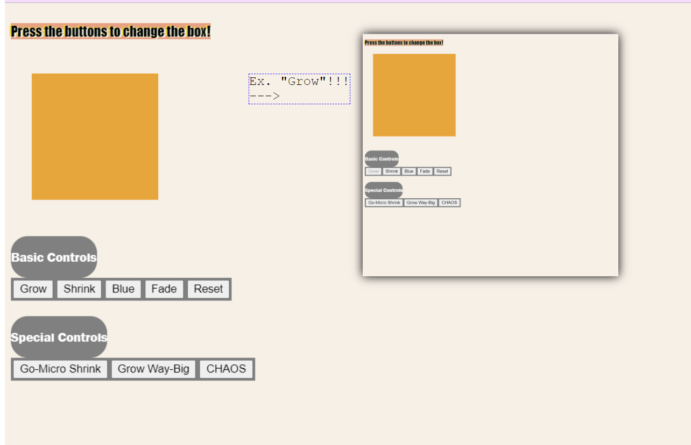

My Name is Nicholas Holzer; a student of Wedsite Development, and Computing Technology Enthusiast. My longterm goals include development of my own app systems and breaking ground in new AI cognizing methods. Thank you very much for checking out my portfolio today; enjoy your visit, and reach out if you like what you see!
About Me
Fanpage: Nyango-Starr

A Fanpage for Japanese Mascot/Drummer/Apple-Cat Nyango Starr; featuring embedded youtube video as a background color for the site.
My "Watch-the-Box" Page
A "Watch-the-Box" page; with buttons that use javascript to directly alter the CSS styling of a colored-box